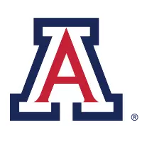

Twenty-five of your athletes, paired with twenty-five real Tucson brands. Every idea is anchored to evidence already in your data: a deal the athlete already did, content they already make, or an activation that already happened.
{{ item.tie }}